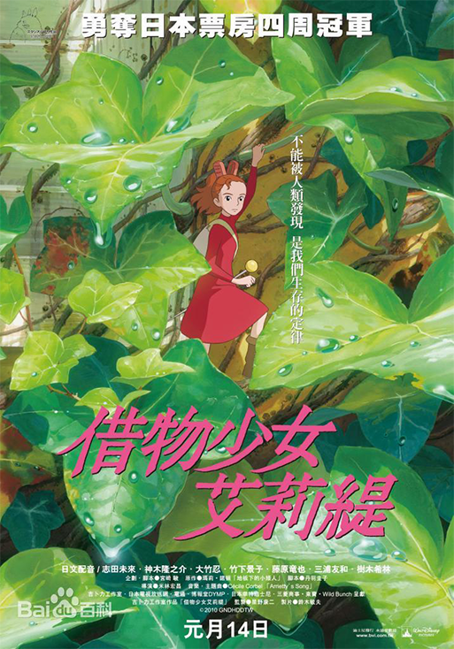

郊外有一幢很大的旧宅子，宅子的庭园差不多快荒废了，住在里
面的是老妇人贞子以及和她差不多年纪的女仆阿春。
这座宅子的地板下生活着即将十四岁的迷你人少女阿莉埃蒂和她的双亲。阿莉埃蒂一家
就是传说中的“借东西的小人”。他们小心翼翼地不让屋主发现，借用必要分量的肥皂、甜品、砂糖、电、燃气等必需品，过着自己的安静日子。
这个夏天，十二岁的少年翔来到了这座宅子疗养。
阿莉埃蒂被翔发现了。不可被人类看见，一旦被看见就必须搬家——这是小人世界的规矩
。爸爸波德责怪女儿给一家人带来了危险，阿莉埃蒂却说：“我可不觉得所有的人都那么危险。”天生好奇鲁莽的阿莉埃蒂开始一点点接近翔，
两人成了好朋友。
殊不料灭顶之灾由此而来。即将灭绝的是人类还是借东西的小人？
